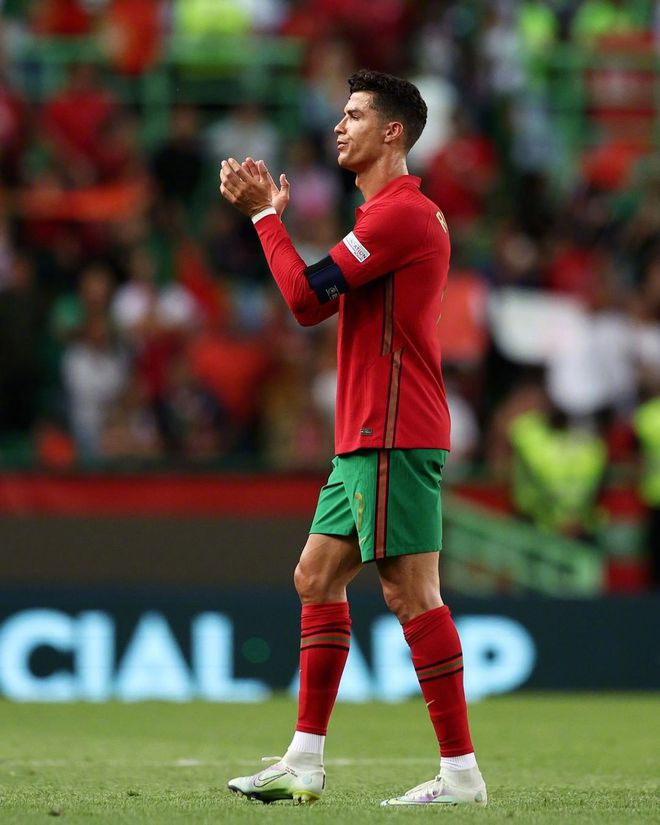

克里斯蒂亚诺·罗纳尔多个人介绍足球传奇职业数据个人集锦图片欣赏新闻动态国家队生涯登陆2-0，又赢了！葡萄牙爆发，3轮不败+登上榜首，C罗剑指队史第2冠近来，葡萄牙发挥出色，他们迎来了欧国联3轮不败，拿下7分，一举登上榜首位置。对阵瑞士，葡萄牙4-0大胜对手，C罗4分钟之内上演梅开二度，创下了多项纪录。面对捷克，葡萄牙再次爆发，以2-0的比分取胜。此役，葡萄牙全面占优，控球率高达61%，贝尔纳多席尔瓦送出了2次助攻，坎塞洛和格德斯破门，帮助球队捍卫主场。在积分榜上，葡萄牙力压西班牙，排名第一，有望出线，C罗率队冲击队史第2冠！ 葡萄牙对阵捷克，从世界排名来看，前者占优，桑托斯的球队排在世界第8位，对手位居世界第33。此役，葡萄牙首发为4.01亿欧元，C罗顶在锋线，中场由贝尔纳多席尔瓦、若塔坐镇，防线由坎塞洛、佩佩领衔。捷克首发为9935万欧元，明显不如葡萄牙。在赛前，两队都是4分，这场较量属于榜首大战，葡萄牙不容有失。历史战绩显示，双方近2次交锋，葡萄牙取得了2连胜的佳绩。 比赛开始第10分钟，鲁本内维斯尝试外围远射，皮球偏出门框。第15分钟，葡萄牙继续进攻，当时格雷罗定位球直接传中，后点的威廉卡瓦略射门，被防守球员挡出。第24分钟，葡萄牙快速反击，C罗持球长驱直入，突破到禁区，左脚射门，被捷克解围出底线。第33分钟，场上僵局打破，葡萄牙终于进球了，当时曼城2大球星连线，贝尔纳多席尔瓦直塞，坎塞洛小角度劲射破门，将比分改写为1-0！ 第38分钟，捷克城门再度失守，贝尔纳多席尔瓦助攻梅开二度，贡萨洛-格德斯建功，比分变成2-0！短短几分钟，葡萄牙连续破门，一举扩大优势，奠定了胜局。下半场，第50分钟，捷克错失良机，门前有4人，却未能形成射门，被葡萄牙解围。第60分钟，葡萄牙前场配合失误，捷克断球发动反击，尤雷奇卡射门偏出，捷克又一次浪费机会。第72分钟，尤雷奇卡单刀踢偏，不过有越位嫌疑。 最终，葡萄牙在主场2-0击败捷克。  最终，葡萄牙在主场2-0击败捷克。数据显示，本场比赛，葡萄牙拥有61%的控球率，捷克仅有39%，双方射门之比为10-9。在赛后评分中，坎塞洛拿到最高的8.4分，成为最佳球员，贝尔纳多席尔瓦有8.3分，排在全场第二。在积分榜上，葡萄牙位居榜首，领先西班牙2分。过去，葡萄牙获得过1座欧国联冠军，本届赛事，C罗渴望捧起第2冠！ |